Acompanhamento de performance para atletas de quadra, levando ao amador os dados que antes eram exclusivos do alto rendimento.
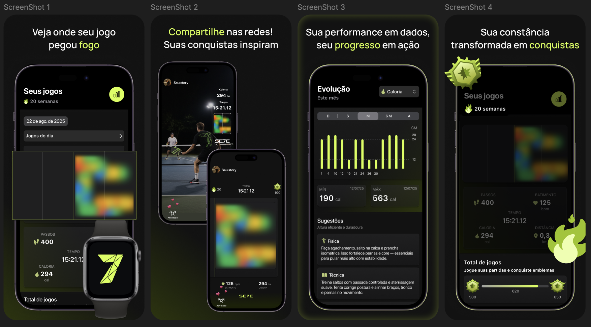
Tudo começou com uma pergunta: o que faz uma experiência parecer realmente exclusiva para quem a utiliza?
Antes de pensar na solução, investigamos como a exclusividade influencia motivação, pertencimento e evolução em diferentes contextos. Entre os caminhos explorados, percebemos que, no esporte, exclusividade não significa restringir acesso, mas oferecer informações relevantes que ajudem cada pessoa a acompanhar o próprio progresso.
Esse foi o desafio que guiou o projeto: Como incentivar praticantes de esportes a acompanharem sua evolução de forma significativa?
Conduzi a fase de descoberta reunindo benchmarking, pesquisa e análise do ecossistema Apple para entender o que já existia e onde ainda havia espaço para gerar valor.
A investigação mostrou que aplicativos de saúde registram uma grande quantidade de dados, mas apresentam essas informações de forma genérica. Para quem pratica um esporte específico, os números existem, mas nem sempre se transformam em algo útil para a evolução dentro daquela modalidade.
Esse entendimento direcionou o projeto para uma experiência capaz de aproveitar os dados coletados pelo Apple Watch e pelo HealthKit, traduzindo essas informações em insights relevantes para quem realmente pratica o esporte.
Com o problema mais claro, defini um produto focado em uma única proposta de valor. Em vez de reunir diversas funcionalidades, priorizamos uma experiência que ajudasse praticantes de esportes de quadra a acompanhar sua evolução por meio de métricas específicas da modalidade.
Essa decisão manteve o escopo enxuto e reforçou uma lição importante: um produto cria mais valor quando resolve muito bem um problema do que quando tenta resolver muitos ao mesmo tempo.
Antes das telas, estruturei a base visual no Figma seguindo as diretrizes do ecossistema Apple. Componentes, tipografia e hierarquia visual foram pensados para facilitar a leitura de informações durante o treino, tanto no iPhone quanto no Apple Watch.
Essa organização também tornou a evolução das interfaces mais consistente e simplificou a colaboração com o desenvolvimento.
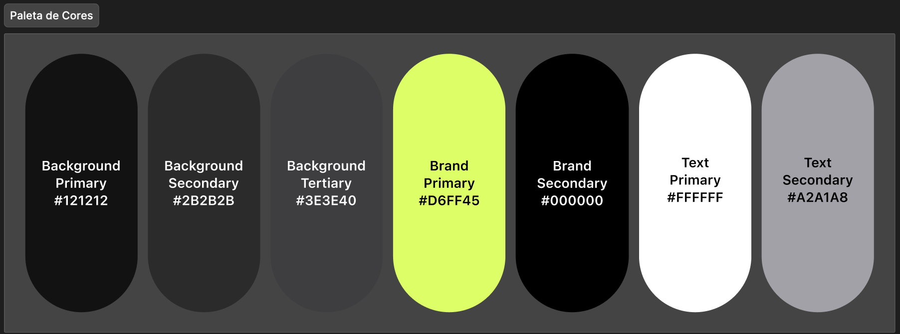
Comecei validando os principais fluxos em média fidelidade para entender se a navegação fazia sentido antes de investir na interface final.
Com os fluxos definidos, evoluí para a alta fidelidade, refinando a organização das métricas, os estados da interface e a forma como o progresso era apresentado ao usuário, sempre priorizando clareza e facilidade de interpretação.
Média fidelidade · estrutura e fluxo
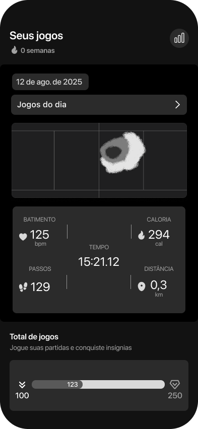
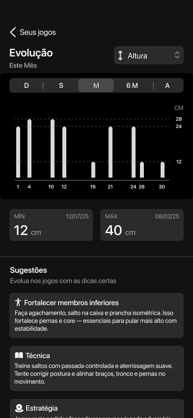
Alta fidelidade · iPhone
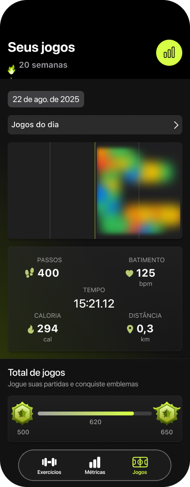
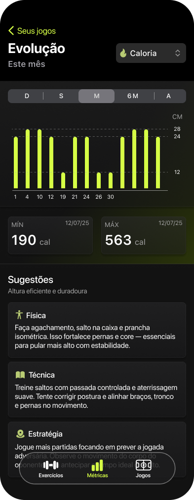
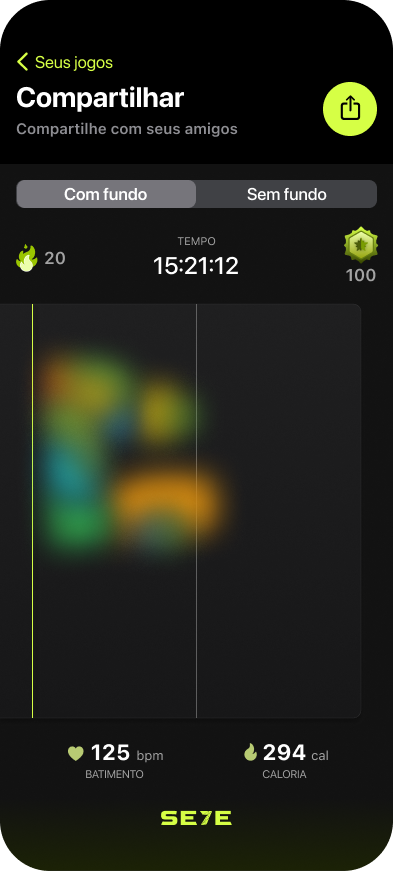
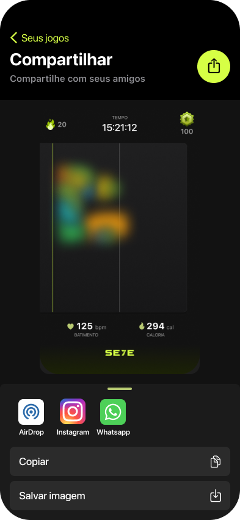
O Apple Watch não foi apenas um dispositivo complementar, mas uma parte central do produto. Como é nele que os dados são capturados durante a atividade física, desenhei uma experiência rápida de consultar, permitindo que as principais informações fossem compreendidas em poucos segundos sem desviar a atenção do treino.
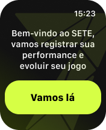
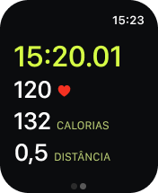
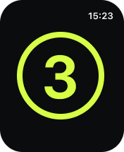
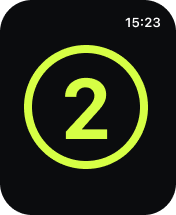
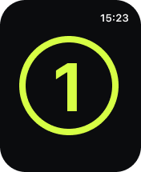
O resultado foi um aplicativo publicado na App Store que integra iPhone e Apple Watch para transformar dados de treino em informações mais relevantes para praticantes de esportes de quadra.
Mais do que desenvolver um produto conectado ao ecossistema Apple, este projeto reforçou a importância de definir uma proposta de valor clara, manter o escopo focado e criar experiências que transformem dados em decisões úteis para o usuário.
Este projeto reforçou que inovação nem sempre significa criar algo completamente novo. Muitas vezes, o maior valor está em reinterpretar tecnologias que já existem e organizá-las de uma forma que faça sentido para um contexto específico e para as necessidades reais das pessoas.